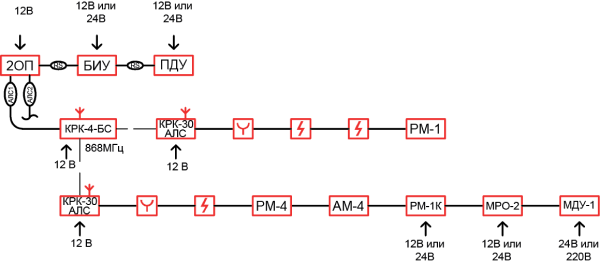
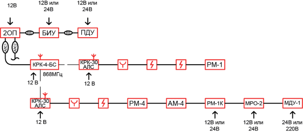

Пожарная сигнализация
Адресно-аналоговая система пожарной сигнализацииАдресно-аналоговая система пожарной сигнализации ТМ «Рубеж» организуется с использованием определенного набора адресного оборудования:
Адресный приемно-контрольный прибор Рубеж-2ОП прот.R3 – управляющий элемент всей системы. Он обеспечивает объединение всех адресных устройств в логические области – зоны, производит постоянный опрос устройств, получает от них информацию, обрабатывает ее, принимает решения о «Пожаре», «Неисправности» в системе и, если это необходимо, по заранее заданной логике формирует управляющие воздействия на исполнительные устройства.
Блок индикации Рубеж-БИ – подключается к приемно-контрольному прибору через RS-485. Имеет на лицевой панели светодиодные индикаторы, с помощью которых отображает в реальном времени состояние каждой зоны системы – в зоне произошел «Пожар» или «Неисправность».
Адресно-аналоговый дымовой оптико-электронный пожарный извещатель ИП 212-64 прот.R3 – реагирует на задымление окружающей среды и передает на ППКОПУ информацию об этом.
Адресно-аналоговый тепловой максимально-дифференциальный пожарный извещатель ИП 101-29PR прот.R3 – производит постоянное слежение за окружающей температурой и передает на ППКОПУ информацию об этом.
Важно помнить:
Одним адресным извещателем «Рубеж» можно защищать одно помещение при выполнении заказчиком условия о своевременной замене неисправного извещателя.
Адресно-аналоговый комбинированный извещатель ИП 212/101-64-PR прот.R3 – сочетает в себе функции дымового и теплового извещателей. Он производит контроль задымления и температуры и передает оба значения на ППКОПУ.
Адресный ручной пожарный извещатель ИПР 513-11 прот.R3– ручное включение сигнала «Пожар-2».
Адресные метки АМ-1 прот.R3 и АМ-4 прот.R3– получают извещения от любых устройств с выходом типа «сухой контакт» и передают эти сигналы на ППКОПУ.
Адресные метки пожарные АМП-4 прот.R3– предназначены для включения в адресную систему обычных пороговых (неадресных) извещателей.
Изолятор шлейфа ИЗ-1 прот. R3 – адресное устройство, позволяющее защитить адресную линию от короткого замыкания (занимает 1 адрес).
Прибор приемно-контрольный Рубеж-2ОП прот.R3 имеет адресные линии связи, которые могут быть как радиальные, так и кольцевые и, при необходимости, иметь ответвления. К этим АЛС подключаются все адресные устройства. Порядок расположения устройств на АЛС произвольный, нет ограничений в каком месте линии будет находиться какой адрес, главное условие – отсутствие двух одинаковых адресов в пределах каждой АЛС (на разных АЛС могут быть одинаковые адреса). Для защиты линии связи от короткого замыкания в линию включаются изоляторы шлейфа ИЗ-1 прот. R3, которые отключают короткозамкнутый участок линии, обеспечивая тем самым остальные части линии в рабочем состоянии. Наибольшую эффективность дает установка ИЗ-1 прот. R3 в кольцевой линии и в начале каждого ответвления.
Все адресные пожарные устройства объединяются в пожарные зоны. В каждую зону может входить любое адресное устройство. При конфигурировании задается название каждой зоне и прописывается, сколько извещателей должно сработать, чтобы в этой зоне сформировался сигнал «Пожар-2». Если в конкретный момент сработавших извещателей окажется меньше, то зона будет находиться в режиме «Пожар-1». Эта настройка относится только к адресным дымовым, тепловым, комбинированным извещателям и шлейфам всех адресных меток. При нажатии кнопки адресного ручного извещателя зона перейдет в «Пожар-2», независимо от настройки количества извещателей.
Важно помнить:
База (розетка) для подключения извещателей «Рубеж» в линию связи поставляется в комплекте с извещателем, и закладывать ее в спецификацию отдельной позицией не нужно. Комплект монтажных частей для установки извещателей в подвесной потолок не входит в комплект поставки извещателя и вносится в спецификацию отдельной позицией.
Каждый адресный извещатель в системе занимает 1 адрес. Адресные метки занимают столько адресов, сколько шлейфов к ним может подключаться. АМ-1 контролирует один шлейф, на который подключаются «сухие контакты» любых устройств, таких как извещателей пламени, линейных извещателей, взрывобезопасных приборов и т.д. Контакты могут быть как нормально замкнутые (НЗ), так и нормально разомкнутые (НР) и шлейф может иметь функцию двойной сработки при подключении двух контактов.
Технологическое сообщение представляет собой информацию о каком-либо событии, не относящегося к «Пожару» или «Тревоге», например, сигнал отключения вентиляции при пожаре. Шлейф имеет контроль целостности линии на короткое замыкание и обрыв с передачей состояния на приемно-контрольный прибор.
Адресная метка АМ-4 прот.R3 контролирует четыре шлейфа с «сухими контактами» и занимает 4 адреса в системе. Адреса шлейфам задаются по порядку. Параметры и функции каждого шлейфа аналогичны шлейфу метки АМ-1 прот.R3.
Шлейфы меток АМ-1 прот.R3 и АМ-4 прот.R3 являются не питающими и к ним нельзя подключить токопотребляющие устройства, такие как пороговые дымовые извещатели. Для этого в системе предусмотрено отдельное устройство – адресная метка пожарная АМП-4 прот.R3. Она имеет в своем составе четыре питающих шлейфа, на которые подключаются обычные безадресные пожарные извещатели. Метка АМП-4 прот.R3 в системе занимает 8 адресов так как в своем составе имеет четыре шлейфа, три релейных выхода и вход для подключения считывателя по протоколу Wiegand. При сработке любого извещателя в шлейфе на ППКОПУ передается соответствующее событие с указанием адреса шлейфа. К метке могут подключаться извещатели ИП 212-45, ИП 212-141, ИП 212-141М, ИПР 513-10 или аналогичные. Каждому шлейфу должен быть установлен тип шлейфа в соответствие с необходимым функционалом:
- тип 1 – шлейф дымовых датчиков с определением двойной сработки;
- тип 3 – шлейф тепловых датчиков с определением двойной сработки;
- тип 6 – шлейф охранных датчиков.
В конце каждого шлейфа АМП-4 прот.R3 необходимо устанавливать оконечные резисторы номиналом 4,7кОм.
Любой адресный извещатель или шлейф адресных меток можно поставить в режим «отключение». В этом случае от устройства не будет приходить сигнал тревоги, неисправности, потери связи. Данная функция может применяться, например, когда необходимо снять извещатель для обслуживания и приемно-контрольный прибор не будет выдавать при этом сообщений неисправности.
РАДИОКАНАЛЬНОЕ УДЛИНЕНИЕ АЛС
В системе ОПС тм «Рубеж» существует возможность организации радиоканального удлинения адресной линии связи АЛС.
Для этих целей, кроме ППКОПУ, используются следующие устройства:
- Конвертер радиоканальный КРК-4-БС прот.R3 - обеспечивает связь с 4 радиоканальными конвертерами КРК-30-АЛС прот. R3
- Конвертер радиоканальный КРК-30-АЛС прот.R3 - обеспечивает подключение до 30 проводных адресных устройств.
Важно помнить:
В системе модуль «КРК-4-БС прот.R3» занимает один адрес.
Система ОПС тм «Рубеж» – проводная система. Радиоканальное удлинение является лишь небольшим расширением системы. Оно может применяться для передачи адресной линии связи в отдельные помещения объекта или отдельно стоящие здания, где прокладка проводов нежелательна или совсем невозможна. В АЛС, идущую от приемно-контрольного прибора, подключается радиоканальный конвертер КРК-4-БС прот.R3. К этому конвектору по радиоканалу могут подключаться до 4-х радиоканальный конвертер КРК-30-АЛС прот.R3. Каждый КРК-4-БС прот.R3 и КРК-30-АЛС прот.R3 образуют радиоканальную сеть. Количество радиоканальных сетей в системе ограничивается количеством свободных адресов на ППКОПУ.
Следует также помнить, что установка КРК-4-БС прот.R3 и КРК-30-АЛС прот.R3 должна производиться вдали от массивных заземленных металлических предметов для предотвращения затухания радиосигнала в данных конструкциях.
Информационный канал связи КРК-4-БС прот.R3 с КРК-30-АЛС прот.R3 является двухсторонним.
Модули КРК-4-БС прот.R3 и КРК-30-АЛС прот.R3 занимают в адресном пространстве прибора по одному адресу. Адресные устройства, подключенные к КРК-30-АЛС прот.R3, занимают адреса в общем емкостном пространстве в линии АЛС прибора Рубеж-2ОП прот.R3.
Важно помнить:
При размещении конвектора КРК-4-БС прот.R3 на объекте необходимо обеспечить его оптимальную равноудаленность от всех КРК-30-АЛС прот.R3, приписанных к нему.
Конвекторы КРК-4-БС прот.R3 и КРК-30-АЛС прот.R3 к зонам не приписываются, только осуществляют связь проводных адресных устройств с прибором Рубеж-2ОП прот.R3.
 
К списку решений

К списку решений